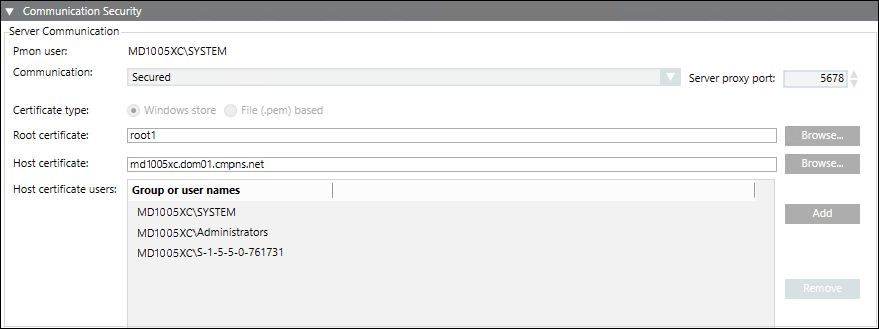

Communication Security Expander (On Client/FEP)
While creating or editing a Client/FEP project, the Communication Security expander allows you to configure the Server Communication details.

On Client/FEP, the Communication Security expander is enabled only during the Client/FEP project creation and editing.
- In the Automatic configuration mode, when you select a server project, the security settings including the Communication mode, the Server proxy port, and the Certificate type are configured with the same details as those of the selected Server project.
- In the Manual configuration mode, you must manually enter the same communication security details as those of the selected Server project.
- When you configure a server project with Communication mode set to secured, you must provide the same root certificate as the one configured on the server.
The host certificate and host key (only applies to .pem-based certificates) can be different, must be created with the same root certificate provided on Server. Otherwise, the Desigo CC client will not launch.
After Client/FEP project creation using file (.pem) based certificates, the root and host certificates and the host certificate key file used for secure communication are copied to the path ..\[ProjectName]\Config and the config fileare updated. In case of Windows store certificates, only the config file is updated.
Project Settings — Communication Security Expander | |
Item | Description |
Communication | By default this field is disabled and set to secured. |
Server proxy port | This is enabled only when you select Client/Server communication type as secured and you are creating/editing a project in Manual configuration mode. |
Certificate type | By default, the Certificate type is set as Windows store. This is enabled only when you select Client/Server communication type as secured. |
Root certificate | By default, it is enabled and the root certificate, if set as default on the Client/FEP machine, is selected. |
Host certificate | By default, it is enabled and the host certificate, if set as default on the Client/FEP machine, is selected. |
Host key | This is enabled only when you select Client/Server communication type as secured and you have selected the certificate type as .pem file. Allows you to browse for the host key certificate from the .pem file based. |
Host certificate users | By default, it displays the group or users of the host certificate that you have set as default on the Client/FEP. Add is always enabled, allowing you to add the user for the selected host certificate. You can also remove a user from the list other than the System user and the Administrator group, if available. |